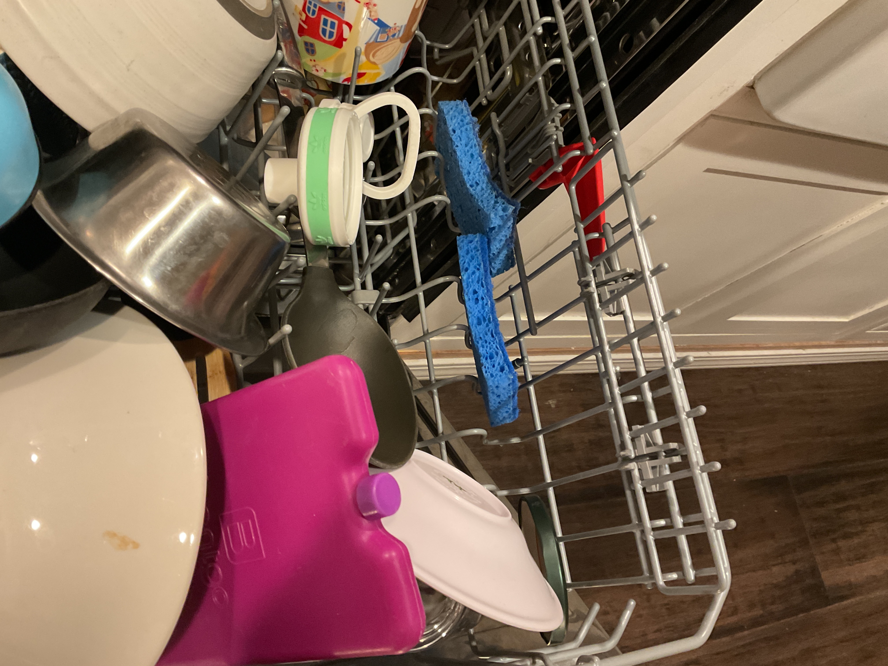
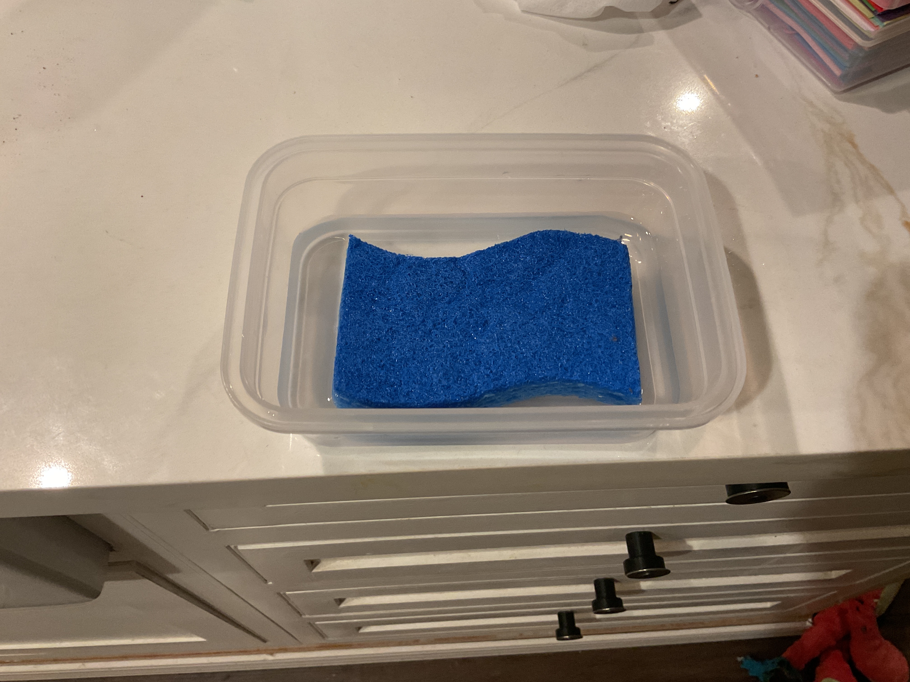

Learning how to sanitize a sponge is pretty useful, because a sponge is built to absorb water. This makes it a safe haven for about 362 different types of bacteria, expecialy if you are using it to clean your dishes. That's even more different types of bacteria than found on a toilet! Here's how to make sure your sponges stay clean.
Simply put the sponge at the top rack and put the dishwasher on the hottest setting. You can put multiple
sponges if you want.

First, clean any of the big residue left over on the sponge, and then boil it for at least 5 minutes. This kills almost all of the bacteria from the heat, exactly like the last option. Remember to not burn yourself..
Clean your sponge as much as you can first, and then soak the sponge in a cup of white vinegar
for at least 5 minutes. It's recommended to use white vinegar because it's not stinky.
